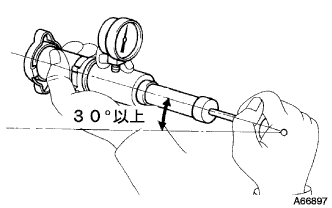

ウォータフィラ キャップSUB-ASSY 単体点検
印刷
準備品一覧
1. ウォータフィラ キャップSUB-ASSY

■ 注 意 ■
ウォータフィラキャップが汚れている場合は、必ず水で汚れを洗い流すこと。
ラジエータキャップテスターを使用する前には、リリーフバルブとプレッシャバルブを冷却水か水でぬらすこと。
ラジエータキャップテスターを使用する場合は、30°以上傾けて点検すること。
ラジエータキャップテスターを使用してゆっくりとテスターをポンピングし、バキュームバルブからエアが出るかを確認する。
基準:
ポンピング速度 3秒間以上に1回
■ 注 意 ■
一定の早さでポンピングすること。
□ 参 考 □
バキュームバルブからエアが出ない場合は、ウォータフィラキャップを交換する。
テスターをポンピングして、リリーフバルブの開放圧力を測定する。
基準:
ポンピング速度 1秒間以上に1回
■ 注 意 ■
このポンピング速度は最初のポンピングに対してのみ。(バキュームバルブを閉めるため)その後のポンピング速度は遅くてもよい。
基準値:
93-122ｋPａ{0.95-1.25ｋｇｆ/ｃｍ
2
}
限度:
78ｋPａ{0.8ｋｇｆ/ｃｍ
2
}
□ 参 考 □
テスターの最大測定値を開放圧力として使用する。
開放圧力が最低値より低い場合、ウォータフィラキャップを交換する。